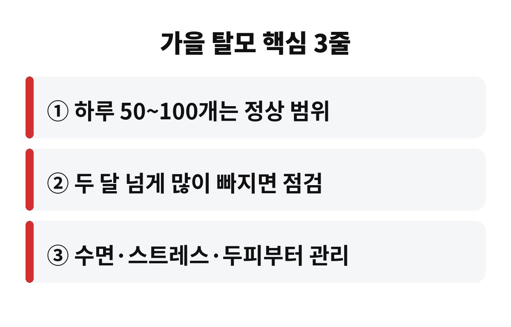

가을 탈모는 하루 50~100개 정도 빠지는 것까지는 대부분 정상 범위로 봅니다. 그런데 요즘 샴푸할 때마다 머리카락이 한 움큼씩 보여서 깜짝 놀라셨다면, 이게 계절 탓인지 진짜 탈모의 시작인지 궁금하실 거예요.
저도 베개에 붙은 머리카락을 보면 괜히 철렁하더라고요. 그래서 오늘은 가을 탈모가 왜 생기는지, 어디까지가 괜찮고 언제부터 병원을 가야 하는지 차근차근 풀어볼게요.
머리카락에는 자라는 시기, 쉬는 시기, 빠지는 시기가 있습니다. 여름 내내 강한 자외선과 땀, 피지에 시달린 두피는 생각보다 많이 지쳐 있어요. 그 영향으로 많은 머리카락이 한꺼번에 쉬는 시기로 넘어갔다가, 두세 달쯤 뒤인 가을에 한꺼번에 빠지는 일이 흔합니다.
그래서 가을에 머리카락이 부쩍 빠지는 것은 대개 일시적인 현상이에요. 동물이 털갈이를 하는 것과 비슷하다고 생각하시면 편합니다. 다만 환절기에는 일교차 때문에 두피가 건조해지고, 수면 리듬까지 깨지기 쉬워서 빠지는 양이 더 눈에 띄는 거죠.
건강한 사람도 하루에 50~100개 정도는 자연스럽게 빠집니다. 그러니 샴푸 후 배수구에 머리카락이 보이는 것만으로 걱정하실 필요는 없어요. 문제는 평소보다 확연히 많아졌는지, 그리고 그 기간이 얼마나 이어지는지입니다.
집에서 간단히 확인하는 방법이 있어요. 마른 머리를 빗은 뒤 빗에 남은 머리카락을 세어 보고, 자고 일어난 베개 위 머리카락도 며칠 동안 기록해 보세요. 숫자를 적어 두면 막연한 불안이 훨씬 줄어듭니다.
| 상태 | 이렇게 보세요 |
| 하루 50~100개 안팎 | 정상 범위, 지켜보면 됩니다 |
| 평소보다 눈에 띄게 증가 | 생활 습관부터 점검하세요 |
| 두세 달 넘게 계속 | 피부과 전문의 상담을 권해요 |

첫째는 샴푸 습관입니다. 너무 뜨거운 물은 두피를 더 건조하게 만들기 때문에 미지근한 물로 충분히 적신 뒤, 손톱이 아니라 손가락 지문으로 부드럽게 문질러 주세요. 거품을 오래 방치하지 말고 깨끗이 헹구는 것도 중요합니다.
둘째는 말리는 방법이에요. 젖은 채로 자면 두피에 세균이 번식하기 쉬우니 꼭 말리고 주무세요. 드라이기는 멀리서 약한 바람으로 쓰면 열 손상을 줄일 수 있습니다.
셋째는 잠과 스트레스입니다. 수면이 부족하거나 스트레스가 쌓이면 머리카락이 쉬는 시기로 넘어가기 쉬워요. 단백질, 철분, 비타민이 부족한 무리한 다이어트도 탈모를 부추길 수 있으니 끼니는 거르지 마세요.
두세 달이 지나도 빠지는 양이 줄지 않거나, 정수리와 가르마 부분이 눈에 띄게 휑해지거나, 앞머리 라인이 점점 올라간다면 단순한 가을 탈모가 아닐 수 있어요. 두피에 붉은 기, 가려움, 비듬이 심하게 동반될 때도 마찬가지입니다.
이럴 때는 인터넷 후기나 광고만 믿고 영양제를 사 먹기보다 피부과에서 원인을 먼저 확인하는 것이 시간과 돈을 아끼는 길이에요. 탈모는 일찍 발견할수록 관리하기 쉽거든요.
혹시 요즘 머리카락이 평소보다 많이 빠지고 있나요? 그동안 해보신 관리법이 있다면 댓글로 나눠 주세요. 도움이 되셨다면 구독해 주시면 다음 건강 소식도 가장 먼저 전해 드릴게요.
※ 이 글은 일반적인 건강 정보로, 증상이 지속되거나 걱정되면 전문의 상담을 권장합니다.